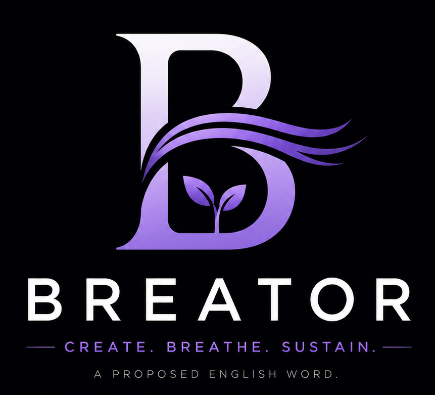

Create. Breathe. Sustain.
A proposed English word for people who create and continuously breathe life into what they build.
Breator (noun)
A Breator is someone who creates something valuable and continuously improves, nurtures, and sustains it over time.
Unlike someone who simply starts a business or launches an idea, a Breator remains committed to helping it grow and create lasting value.
Words like Creator, Founder, and Entrepreneur describe different parts of the journey.
Breator is a proposed word intended to describe someone who not only creates but also continuously breathes life into what they build.
"Create. Breathe. Sustain."
Download the official definition, manifesto, and supporting documents.